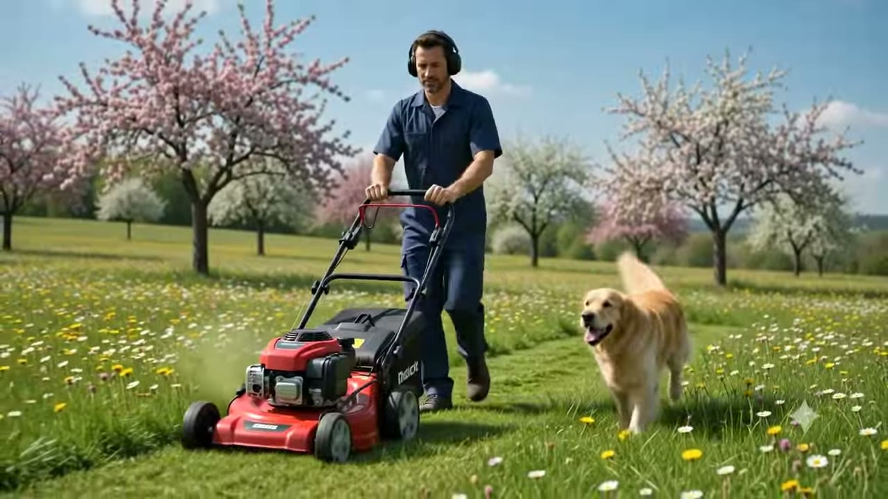

🌿
Garden Design
Master plans drawn like architecture — structure, sightlines and seasonal rhythm composed before a single seed is sown.

Crafting Nature. Creating Serenity.
Professional gardening and landscaping that brings life, beauty and value to your outdoor spaces — designed, planted, and nurtured to resonate for decades.
02-B. WHAT WE DO
Master plans drawn like architecture — structure, sightlines and seasonal rhythm composed before a single seed is sown.
Species selected for your microclimate, layered for year-round texture.
Smart, low-waste water systems tuned to each zone automatically.
Precision mowing, feeding and seasonal maintenance — your landscape kept pixel-perfect, all year, by a dedicated crew.
Mature specimen trees sourced, placed and established with care.
03-C. THE FRONTIER
We treat every plot as unexplored terrain — mapping the light, the slope and the soul of a place, then building a landscape that keeps revealing itself.
03-C. HOW WE WORK
STEP 01 — DISCOVER
Site survey, soil tests and a long conversation about how you want to live outdoors. Nothing is planted until the brief is alive.
STEP 02 — DESIGN
Master plans, planting palettes and 3D visuals. You walk the garden before it exists — every sightline and season accounted for.
STEP 03 — BUILD
Fencing, hardscape, soil, irrigation and planting installed by our own crews — precise, clean, and engineered to last.
STEP 04 — THRIVE
Seasonal care keeps the system in balance — so the garden doesn't just survive, it grows more beautiful every year.
04-D. BY THE NUMBERS
05-E. OUR WORK
06-F. THE TRANSFORMATION
Drag the handle to reveal a real Premium before & after.
07-G. KIND WORDS
"They didn't just landscape the garden — they understood how we wanted to live in it. Two years on, it keeps getting better."
"The before/after is genuinely shocking. Friends ask if we moved house. The crew was precise, tidy, and fast."
"Their planting plan means something is in flower every single month. It's a calendar made of petals."
"Smart irrigation halved our water bill and the lawn has never looked richer. Engineering and gardening in one team."
08-H. GOOD QUESTIONS
Most projects run 6–12 weeks from first survey to final planting, depending on scale and season. Design takes 2–3 weeks; the build is staged so you always have usable outdoor space.
Both. Some of our favourite work edits what's already growing — keeping mature trees and good bones, then rebuilding structure, soil and planting around them.
Seasonal pruning, feeding, lawn programmes, irrigation tuning and replanting where needed. You'll have a dedicated crew who knows your garden by name.
Yes — we design to the budget, not past it. The master plan can also be phased over several seasons so the garden grows as you do.
We do. You'll receive full drawings, planting plans and specifications that any competent contractor can build from — though we'd love to build it with you.
05-E. LET'S BEGIN
Tell us about your space. We'll send back a first concept within a week.